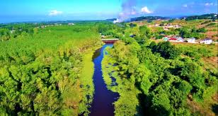
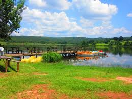

Acarlar Longozu
Acarlar Longozu, Sakarya şehir merkezinden yaklaşık olarak 60 km uzaklıkta yer almaktadır. Acarlar Longozu’na ulaşım gerçekleştirmek isteyen tatilciler; özel araçlarını ve taksileri kullanabilir. Acarlar Longozu, çok sayıda canlı türüne ev sahipliği yaptığından dolayı; burada çeşitli canlı türlerini incelemek mümkündür. Acarlar Longozu’nda bulunan işletmeler; göl bisikletleri ile su üstünde gezme imkanı sunmaktadır. Keyifli bir göl bisikleti turu yapan tatilciler; eşsiz manzaranın tadını çıkarabilir ve hemen ardından uzun doğa yürüyüşlerine çıkabilir. Acarlar Longozu, haftanın her günü ve günün her saati ziyaret edilebilmektedir. Acarlar Longozu’na giriş yapabilmek için herhangi bir giriş ücreti ya da giriş kısıtlaması bulunmamaktadır.

Kent Park
Sakarya Kent Park kent merkezinde, 160 bin metrekare alanın enkazdan yeşile dönüştürülmesiyle oluşturulmuştur. Eski Zirai Donatım Kurumu Fabrikası arazisine inşa edilen ve yaklaşık 4 bin 500 metre karelik yürüyüş alanına sahip, Kent parktaki doğal ortam ve ağaçlar korunarak tüm yüzey çimlendirilmiştir. Parkta 14 bin metrekare gölet bulunmaktadır. Kent park, yanına kurulduğu Çark Deresi sayesinde her mevsim yeşildir. Parkın orta yerine inşa edilen gölet ve üzerinde yer alan adacıklara ulaşmak için iki köprü inşa edilmiştir. Adacıklardaki ağaç gölgeleriyle serin ve huzurlu bir ortamın sunulduğu parkta spor yapmak için de faklı bölümler de bulunmaktadır.

Justinianus Köprüsü
Sakarya şehir merkezinden aşağı yukarı 10 km uzaklıkta yer alan Justinianus Köprüsü’ne ulaşım; özel araç ve taksiler aracılığı ile kolayca gerçekleştirilebilir.
Justinianus Köprüsü, ünlü Bizans yapılarından bir tanesidir. Toplam uzunluğu 365 metreye ulaşan Justinianus Köprüsü; aynı zamanda 12 kemere sahiptir. Justinianus Köprüsü’nü ziyaret eden gezginler; şehrin tarihi dokusunu ve mimarisini inceleyebilir, köprü üzerinde manzaraya karşı hoş fotoğraflar çekilebilir.
Justinianus Köprüsü, yılın her günü ve günün her saati ziyarete açıktır.
Justinianus Köprüsü’nü ziyaret edebilmek için herhangi bir giriş ücreti ya da giriş kısıtlaması bulunmamaktadır.

Poyrazlar Gölü
Sakarya şehir merkezinin ortalama olarak 12 km uzağında yer alan Poyrazlar Gölü’ne ulaşım; özel araç ve taksiler aracılığı ile kolayca gerçekleştirilebilir.
Poyrazlar Gölü, oldukça ilgi çekici manzarası ve doğası ile ziyaretçilerini büyüleyen noktalardan bir tanesidir. Poyrazlar Gölü’nde harika gün batımı manzarasına karşı çay ya da kahve içmek mümkündür. Tatilciler; Poyrazlar Gölü’nde bulunan işletmelerin sunduğu hizmetlerden yararlanabilir, aileleri ya da arkadaş grupları ile birlikte ATV turlarına çıkabilir.
Poyrazlar Gölü, yılın her günü ve saati ziyaret edilebilmektedir
Poyrazlar Gölü’ne giriş ücretleri; yetişkin ziyaretçiler için 6 TL, öğrenci ve çocuk ziyaretçiler için ise 3 TL olarak belirlenmiştir. Poyrazlar Gölü’ne özel aracı ile giriş yapmak isteyen gezginler; araç girişi için ekstradan 15 TL ödemek zorundadır.

Sakarya İl Ormanı Tabiat Parkı
Sakarya şehir merkezinden aşağı yukarı 13 km uzaklıkta yer alan Sakarya İl Ormanı Tabiat Parkı’na ulaşım; özel araçlar, taksiler ve toplu taşıma araçları aracılığı ile rahatça gerçekleştirilebilir. Sakarya İl Ormanı Tabiat Parkı’nı ziyaret eden tatilciler; keyifli doğa yürüyüşlerine çıkabilir, çeşitli canlı türlerini gözlemleyebilir ve temiz havanın verdiği huzuru tadabilir. Bisiklet kullanmaktan keyif alan ziyaretçiler burada bisiklet turları düzenleyebilir. Sakarya İl Ormanı Tabiat Parkı’nda kamp ve piknik yapma imkanı da bulunmaktadır. Sakarya İl Ormanı Tabiat Parkı, yılın her günü ve saati ziyaret edilebilmektedir. Sakarya İl Ormanı Tabiat Parkı’na giriş yapabilmek için herhangi bir giriş ücreti ya da giriş kısıtlaması bulunmamaktadır.

Sapanca Gölü
Sapanca Gölü, Sakarya il merkezinden ortalama olarak 20 km uzaklıkta yer almaktadır. Sapanca Gölü’ne ulaşım gerçekleştirmek isteyen gezginler; özel araçları, taksiler ve özel otobüs firmaları aracılığı ile kolayca ulaşım gerçekleştirebilir.
Sapanca Gölü, göz alıcı manzarası sayesinden her sene yerli ve yabancı on binlerce turiste ev sahipliği yapmaktadır. Sapanca Gölü’nde kanolar ve göl bisikletleri aracılığı ile su üstünde gezintiye çıkmak mümkündür. Aynı zamanda Sapanca Gölü; piknik, kamp ve trekking gibi aktiviteler için de oldukça müsaittir.
Sapanca Gölü’nü ziyaret etmek isteyen gezginler; yılın her günü ve günün her saati, tamamen ücretsiz olarak ziyaret gerçekleştirebilir.
Sakarya'nın en güzel tatil köşelerinden Sapanca'daki konaklama seçeneklerine Sapanca Otelleri sayfamızdan ulaşabilirsiniz.

Sakarya Saklı Göl
Sakarya Saklı Göl, Sakarya şehir merkezinden 15 km uzaklıkta yer almaktadır. Sakarya Saklı Göl’e ulaşım; özel araçlar, toplu taşıma araçları ve taksiler aracılığı ile kolayca gerçekleştirilebilir.
Şehir kalabalığından sıkılan, biraz olsun kafa dinleyip rahatlamak isteyen ziyaretçilerin uğrak noktası olan Sakarya Saklı Göl; çeşitli ağaç ve hayvan türlerinin bir arada bulunduğu doğa ile iç içe bir ortamdır. Tatilciler; burada aileleri ya da arkadaş grupları ile birlikte piknik yapabilir, doğa yürüyüşlerine çıkabilir ve eşsiz göl manzarası eşliğinde çaylarını yudumlayabilir.
Sakarya Saklı Göl, yılın her günü ve günün her saati, tamamen ücretsiz olarak ziyaret edilebilmektedir.

Doğançay Şelalesi
Sakarya şehir merkezinin aşağı yukarı 35 km uzağında yer alan Doğançay Şelalesi’ne ulaşım; özel araç ve taksiler aracılığı ile gerçekleştirilebilir.
Doğa yürüyüşü yapmaktan keyif alan ve manzaranın tadını çıkarmayı seven hemen herkesin ziyaret etmek isteyeceği yerlerden biri olan Doğançay Şelalesi; Sakarya’nın en gözde turistik mekanlarından bir tanesidir. Zorlu yoluna rağmen oldukça ilgi gören Doğançay Şelalesi; temiz havası, göz alıcı manzarası ve yürüyüş parkurları ile ziyaretçileri cezbetmektedir.
Doğançay Şelalesi, yılın her günü ve günün her saati ziyaret edilebilmektedir.
Doğançay Şelalesi’ne giriş yapabilmek için herhangi bir giriş ücreti ya da giriş kısıtlaması bulunmamaktadır.

Maden Deresi
Sakarya şehir merkezinden ortalama olarak 75 km uzaklıkta yer alan Maden Deresi’ne ulaşım; özel araçlar ve taksiler aracılığı ile kolayca gerçekleştirilebilir. Maden Deresi, geçmiş dönemlerde Fransız firmalar tarafından değerli maden çıkarmak için kullanılmaktaydı. Günümüzde değerli maden bulmak çok zor olsa da ziyaretçiler burada yer alan tarihi kalıntıları inceleyebilir, doğa yürüyüşlerine çıkabilir, aileleri ya da arkadaş grupları ile birlikte piknik yapabilir. Maden Deresi, yılın her günü ve günün her saati, 15 TL karşılığında ziyaret edilebilmektedir.

Acelle Yaylası
Acelle Yaylası, Sakarya şehir merkezinden aşağı yukarı 60 km uzaklıkta yer almaktadır. Acelle Yaylası’na ulaşım; özel araçlar aracılığı ile kolayca gerçekleştirilebilir.
Manzara ve yürüyüş parkurlarını aynı yerde bulunduğu Acelle Yaylası; aynı zamanda dere ve küçük bir gölete de ev sahipliği yapmaktadır. Acelle Yaylası’nı ziyaret eden gezginler; canlı çeşitliliğini gözlemleyebilir ve manzaranın keyfini sürebilir.
Acelle Yaylası, yılın her günü ve günün her saati ziyaret edilebilmektedir.
Acelle Yaylası’na giriş yapabilmek için herhangi bir giriş ücreti ya da giriş kısıtlaması bulunmamaktadır.

Rüstem Paşa Camii
Sakarya şehir merkezinden ortalama olarak 3 km uzaklıkta yer alan Rüstem Paşa Camii’ye ulaşım; özel araçlar, taksiler ve toplu taşıma araçları aracılığı ile kolayca gerçekleştirilebilir.
Rüstem Paşa Camii, oldukça ihtişamlı ve şaşalı bir yapıdır. İçerisinde 1200 kişinin aynı anda ibadet edebildiği Rüstem Paşa Camii, 16. yüzyıldan kalma eski bir binadır. Rüstem Paşa Camii; şehrin tarihi dokusunu ve dönemin mimarisini incelemek isteyen hemen herkesin görmek isteyeceği yerlerden bir tanesidir.
Rüstem Paşa Camii, yılın her günü ve günün her saati ziyaret edilebilmektedir.
Rüstem Paşa Camii’ye giriş yapabilmek için herhangi bir giriş ücreti ya da giriş kısıtlaması bulunmamaktadır.